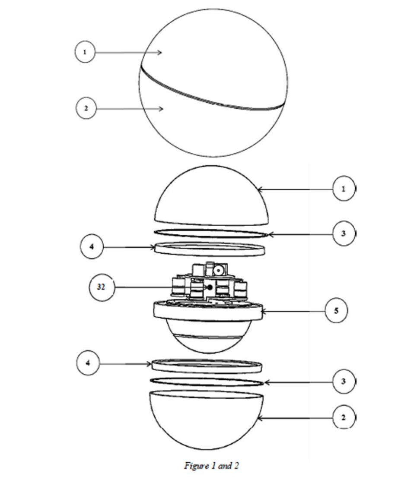
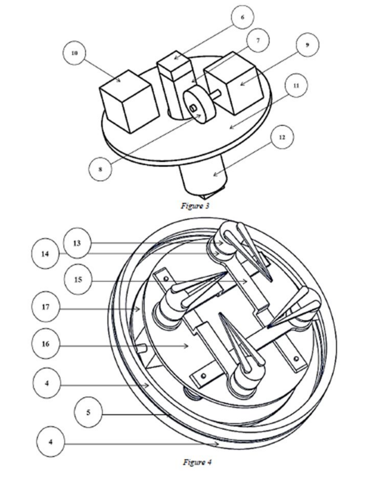
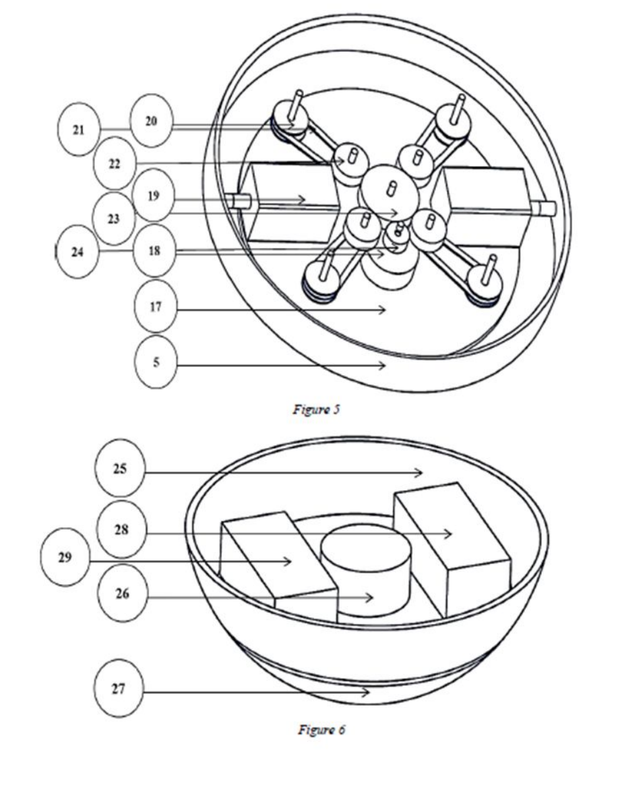
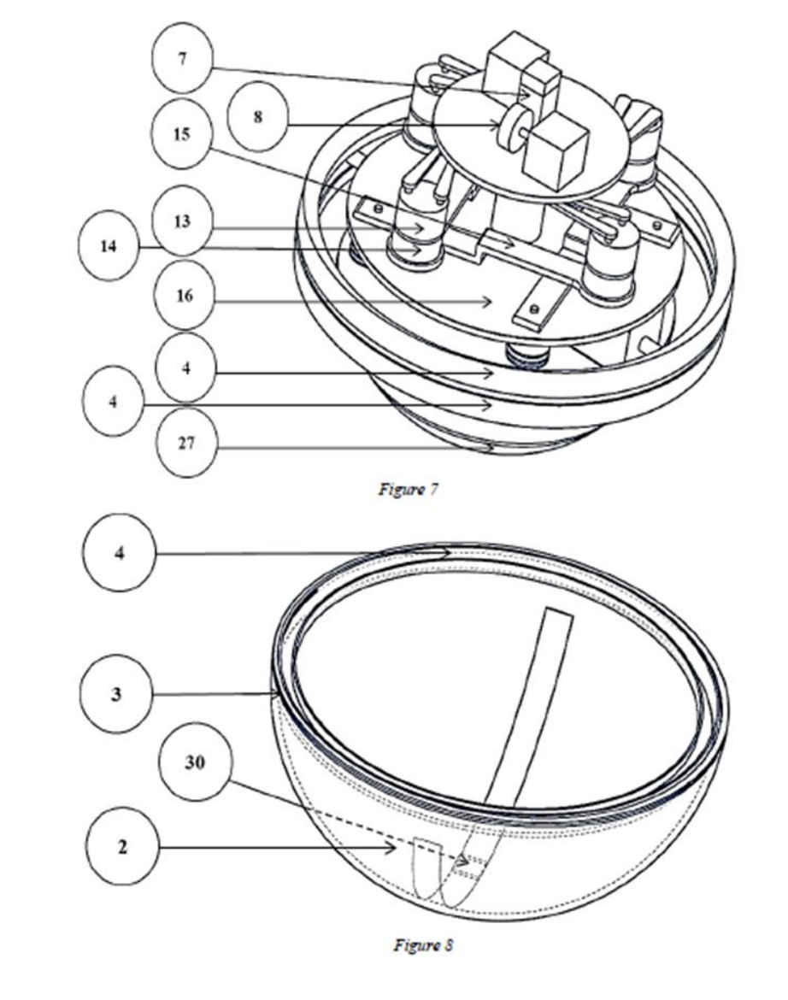
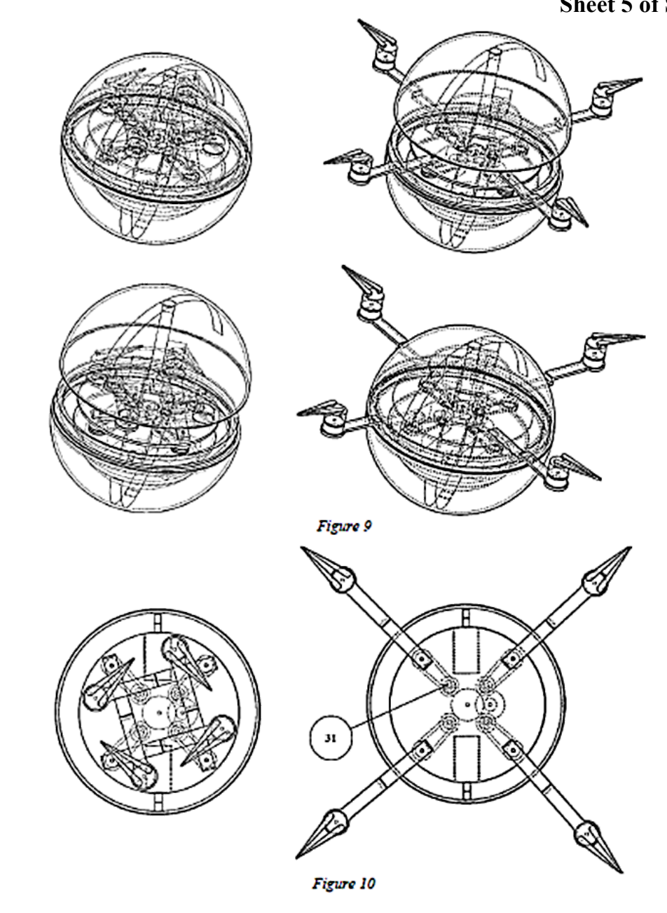
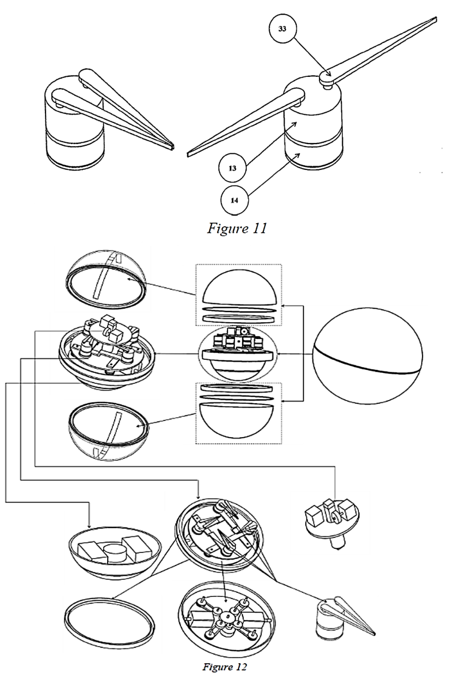
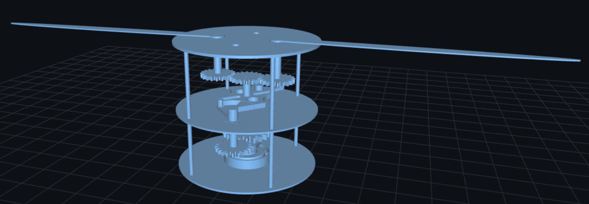

Independent Project
Air, Water & Land Surveillance Robot
A single spherical robot built to move across land, water, and air.
AWL-SB is a holonomic, spherical robot designed for reconnaissance and surveillance in terrain that spans multiple domains. Below is the project walked through a standard systems engineering lifecycle, from concept of operations through detailed design, and an honest account of the stages it didn't reach.

Early AWL-SB build, prepared for DRDO evaluation
Concept & Needs
Concept of Operations
Stakeholder needs. The project targeted two overlapping users: defence operators who need reconnaissance in terrain a soldier can't safely or quickly reach, and researchers in fields like archaeology, mapping, and environmental surveillance who face the same multi-terrain problem in a civilian form.
Concept of Operations. The robot is deployed to a site and moves across whatever terrain it encounters, land, water, or air, without being swapped for a different vehicle. Cameras built into the transparent shell continuously capture the surroundings, regardless of which mode the robot is in. Mode changes (say, water to flight, to clear an obstacle) are handled by the same shell-opening and propeller-deployment sequence, not a separate manual reconfiguration step.
Operating environment. The design targeted terrain that breaks single-domain robots: narrow caves, high-altitude slopes, and mixed land/water sites, the same environments where wheeled robots stall out and where swapping between multiple purpose-built vehicles is impractical in the field.
Requirements Engineering
Decomposed from the ConOps above into testable requirements
Functional
- REQ-1
Land mobility: traverse flat and sloped land terrain without external wheels.
- REQ-2
Water mobility: remain buoyant and mobile on a water surface, reusing the land drive mechanism.
- REQ-3
Aerial mobility: transition to flight when land or water travel is insufficient.
- REQ-4
Surveillance: capture visual data of the surrounding environment in all three modes.
- REQ-6
Mode transition: switch between modes without manual reconfiguration.
Constraints
- REQ-5
Size & weight: stay compact and light enough for propulsion and actuation to fit within one shell.
- REQ-7
Cost: keep unit cost within the program's budget.
No formal performance requirements (range, speed, wind tolerance) were specified for this project; it stayed at the functional and constraint level rather than being quantified into performance targets, which would have been the next step before a build.
System Architecture & Trade Studies
How the modules interact, and the decisions that shaped them
Architecture. The system splits into four primary modules, land, flight, water, and surveillance, sharing one transparent spherical shell. The interfaces between them are mostly mechanical rather than electrical: the same rack-and-pinion motion that opens the hemisphere also deploys the flight module's propellers, and the land module's drive mechanism doubles as the water-surface propulsion, so two "separate" capabilities share one physical interface instead of needing independent hardware.
Make vs. buy. Per the patent disclosure, all electronic components (motors, battery, control electronics) were standard, off-the-shelf parts. The project's actual contribution was the custom mechanical design: the shell-opening linkage, the propeller fold/unfold gearbox, and the shared drive train, not the electronics inside it.
REQ-3REQ-5REQ-6Trade study: foldable vs. solid propellers
The robot's size was fixed early by weight constraints, and at that size solid propellers didn't fit within the shell. Foldable propellers solved the space problem and reused the same open/close motion already driving the hemisphere, so one mechanism did double duty instead of needing a separate deployment system.
REQ-3REQ-7Trade study: BLDC vs. DC motors, flight module
Lifting the shell demanded a minimum thrust-to-weight ratio just to get off the ground, so that was the primary selection criterion, with unit cost second. BLDC motors delivered the best thrust-to-weight within budget, despite the added ESC complexity over a brushed motor.
REQ-1REQ-7Trade study: BLDC vs. DC motors, land module
Land and water driving didn't need flight-grade power density, so a brushed DC motor met the torque and speed required at a lower cost, which mattered more here since land-mode performance wasn't the tightest constraint.
Detailed Design
Mechanical, in full; electrical and software stayed at standard-component level
The spherical shell stays free of the non-holonomic constraints that limit wheeled designs, and remains transparent so onboard cameras can see out in every mode. The land module drives the sphere using arms that contact its inner surface, and steers it with a momentum wheel reacting against the robot's orientation. The flight module's four BLDC motors each fold their propeller away for land or water travel and unfold it for flight, driven by the same rack-and-pinion motion that lifts the upper hemisphere.
Inside each propeller's gearbox, a Geneva mechanism converts the motor's continuous rotation into the discrete, indexed motion needed to fold or unfold the blade, and a pawl-ratchet mechanism locks that position afterward so it can't drift back under load without the motor re-engaging.
The upper and lower shells form the outer body; a magnetic ring, guideway, and driver ring form the driving module; and a shell-mounted magnet, rack, pinion, motor, balancing mass, and support plate together open and close the shell. A battery and electronics package rides on an internal support plate, with a camera on the outer surface of the central hollow cylinder for surveillance.

Outer morphology and shell assembly
Where the Project Stopped
Verification, build, test, and production, honestly
This project reached detailed mechanical design and a filed patent disclosure. It did not proceed to a physical build, formal verification and validation, integration testing, or production. The sections below describe what those stages would have required, not what was actually done.
Sketches & Schematics





